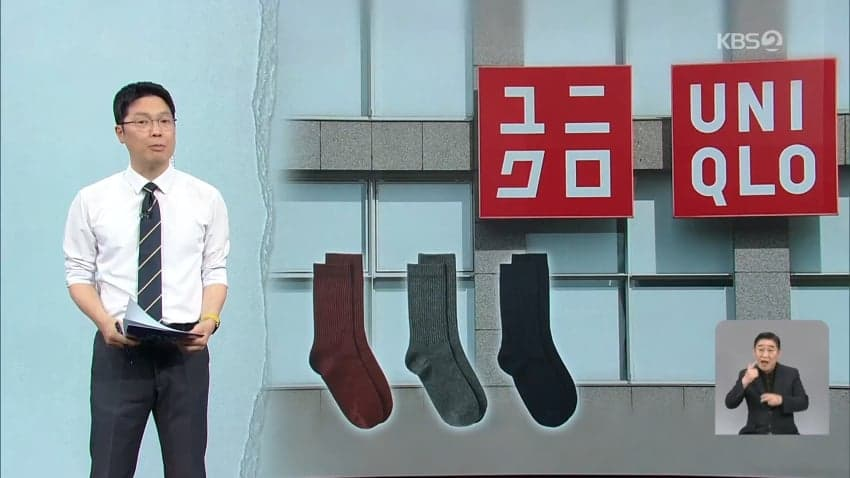
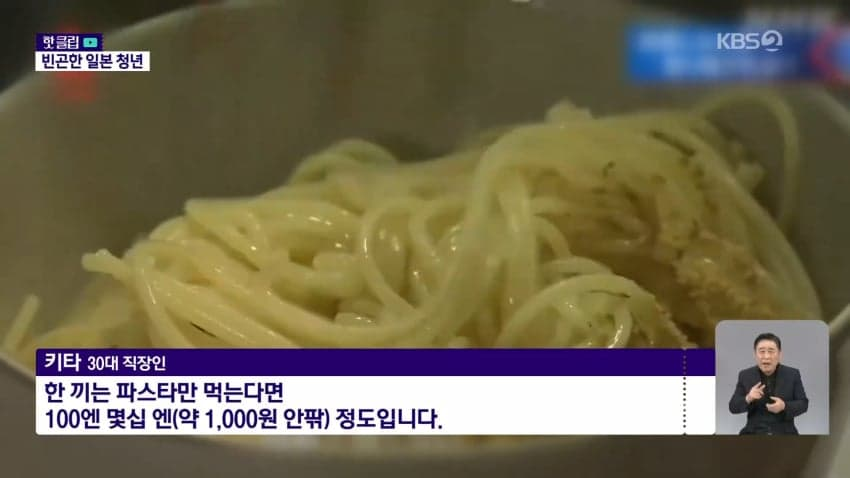
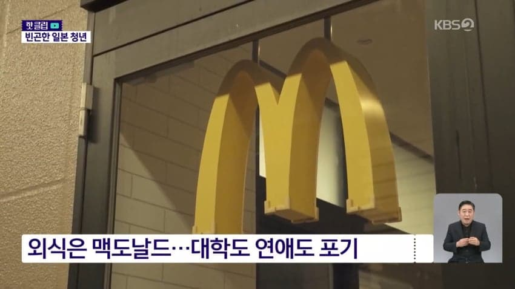
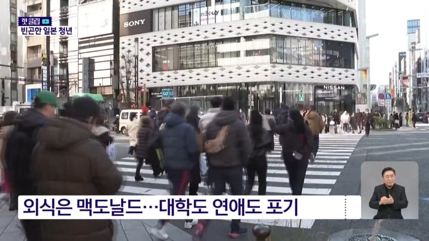
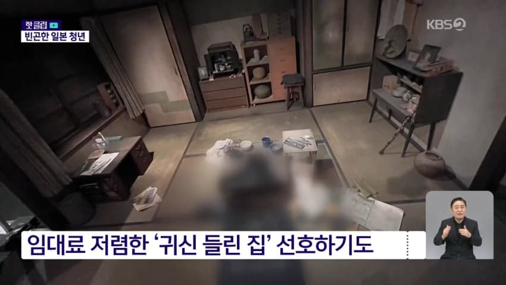
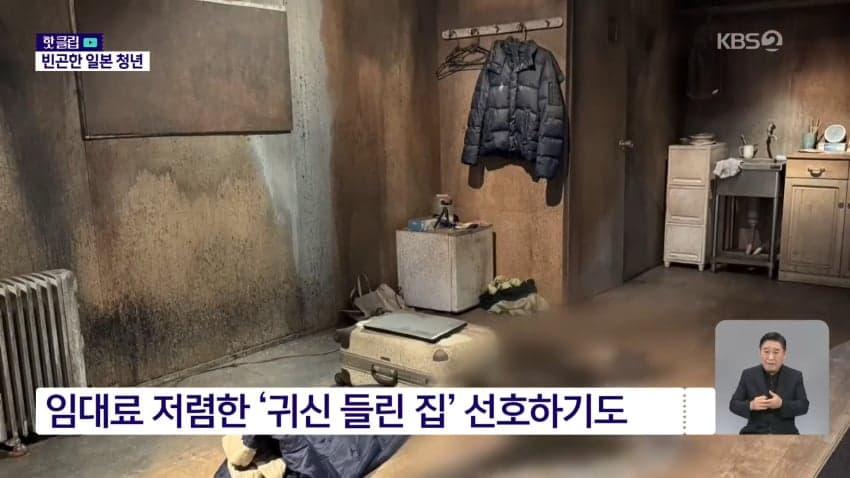
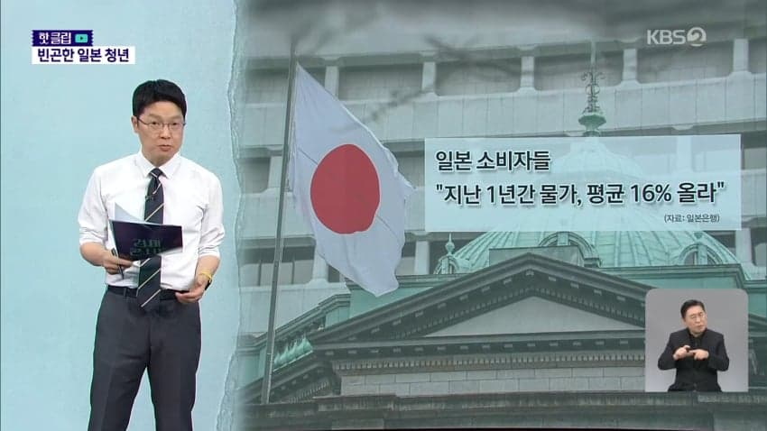
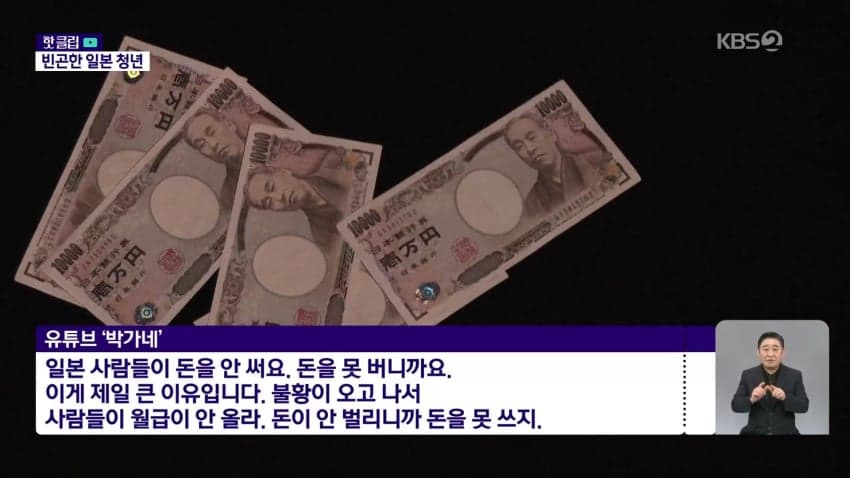
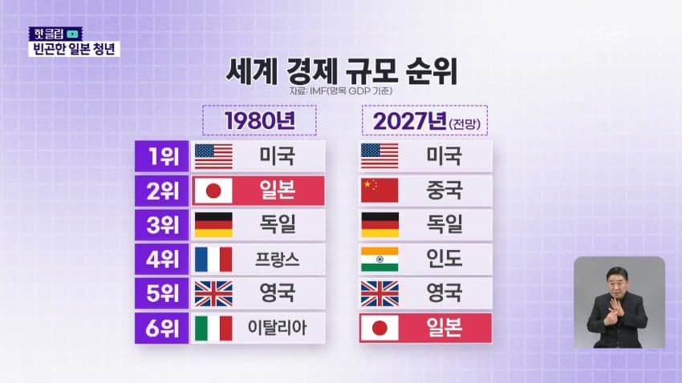
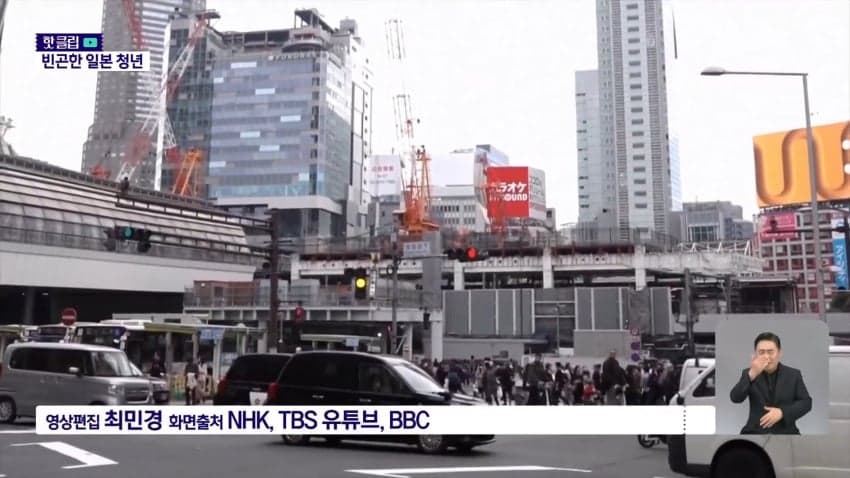

얼마전 유니클로가 일본 현지에서 인기 상품인 양말 가격을 100엔, 한화로 약 900원 올리려다가 거센 국민적 반발에 밀려 결국 철회한 일이 있었음
양말 가격하나에 국민들이 목숨 걸고 덤빌 정도로 일본인들의 삶이 팍팍해졌다는 걸 방증하는 대표적 사례인데 젊은 층은 훨씬 심각하다고 함
일본 나고야에 거주하는 한 일본인 남성 직장인이 홀로 장을 보러 마트를 방문함
그런데 장을 보는 손길이 할인 딱지가 붙은 냉동고로만 향함
장바구니에 담긴 건 20% 할인 품목인 냉동 브로콜리와 시금치뿐임
세 끼 모두 집에서 해결하는 이 남성의 한 달 식비는 우리 돈 23만 원
점심은 늘 대량으로 구매해놓은 파스타를 먹는데
파스타 소스 살 돈 조차 부족해서 분말 스프로 때운다고 함


다른 일본인 청년들도 마찬가지임
외식은 한 달에 한 번, 그마저도 맥도날드를 가는 이들이 많고

돈 때문에 연애와 대학 진학마저 포기하는 청년들이 늘고 있음
심지어 치솟는 주거비 때문에 임대료가 저렴한 귀신 들린 집을 일부어 찾아다니는 젊은층이 늘고 있는데

자살이나 고독사 등이 발생한 집들임

이런 집을 일본에선 '귀신 들린 집'이라고 부른다는데, 다들 꺼려해서 시세보다 30% 이상 저렴하다고 함
근데 그게 오히려 인기 요인이 되고 있다는 거니까 일본 상황을 알만함
이렇게 아끼고 또 아낀 돈은 소액 투자 비과세 제도인 NISA로 쏟아붓는다고 함
'NISA 빈곤' 현상이라고 부름
20대와 30대의 NISA 계좌 보유율과 투자액이 계속 늘고 있음
중앙은행인 일본은행은 최근 그렇게 안 오르던 물가가 좀 올라서 2%에 도달했다고 발표했는데,
3~4%가 넘는 다른 나라들과 비교하면 낮다고 생각하기 쉽지만, 일본 시민들 생각은 다름

지난 1년간 물가가 얼마나 올랐느냐는 설문조사를 했더니 평균 16%나 올랐다고 답했음
식료품 가격 등이 전반적으로 다 오른 데다 엔화 약세까지 겹치면서 체감 상승률이 수치보다 훨씬 큰 것
반면 수십 년간 임금은 오르지 않으면서 실질 구매력은 떨어졌고, 연금 등 노후에 대한 불안도 절약을 부추기고 있음


한때 세계 2위였던 일본의 경제 규모는 세계 6위까지 추락할 거라는 게 IMF의 전망임
중국과 독일에 이어 앞으로는 인도와 영국에도 밀릴 것이 확실시 됨
엔화 약세, 저임금, 소비 부진, 그리고 기업의 투자·혁신 부족 등이 복합적으로 발목을 잡고 있음

일본의 청년들은 오늘도 성장 없는 물가 상승 속에 절약으로 하루하루를 버티고 있음
일본은 지상낙원이라며 일본만 건너가면 새인생이 펼쳐진다던 원종단들 다 어디감?
이미 고독사하고 살던 집은 사고물건으로 내놔져서 대답을 못하는 건가?
일뽕은 정신병!
- dc official App
댓글
수집 당시 댓글 347개
ㅇㅇ · 11.12 07:31:11
· 공정성장 · 11.12 09:08:29
ㅇㅇ · 11.12 07:36:17
ㅇㅇ · 11.12 07:36:56
· ㅇㅇ · 11.12 07:37:05
ㅇㅇ · 11.12 07:46:44
ㅇㅇ · 11.12 07:55:45
ㅇㅇ · 11.12 08:08:54
· ㅇㅇ · 11.12 08:18:52
· ㅇㅇ · 11.12 11:44:44
ㅇㅇ · 11.12 08:09:24
ㅇㅇ · 11.12 08:22:46
ㅇㅇ · 11.12 08:28:30
ㅇㅇ · 11.12 08:32:25
ㅇㅇ · 11.12 08:41:25
원또 · 11.12 09:04:19
ㅇㅇ · 11.12 09:17:11
ㅇㅇ · 11.12 09:19:56
· ㅇㅇ · 11.12 12:01:58
ㅇㅇ · 11.12 09:21:44
ㅇㅇ · 11.12 09:26:03
· ㅇㅇ · 11.12 09:43:35
주갤럼 · 11.12 09:26:16
ㅇㅇ · 11.12 09:33:53
ㅇㅇ · 11.12 09:53:12
ㅇㅇ · 11.12 09:55:06
ㅇㅇ · 11.12 09:59:57
ㅇㅇ · 11.12 10:01:02
Machiavelli · 11.12 10:08:20
00 · 11.12 10:13:57
attach6168 · 11.12 10:39:51
ㅇㅇ · 11.12 10:51:23
ㅇㅇ · 11.12 11:10:35
ㅇㅇ · 11.12 11:35:05
일본여성이한국에 시집오는 이유가있네
ㅇㅇ · 11.12 11:39:52
· ㅇㅇ · 11.12 11:40:01
ㅇㅇ · 11.12 11:43:55
· ㅇㅇ · 11.12 12:00:51
· ㅇㅇ · 11.12 12:46:38
ㅇㅇ · 11.12 12:00:20
· ㅇㅇ · 11.12 15:36:42
· ㅇㅇ · 11.12 15:38:23
· ㅇㅇ · 11.12 15:40:06
ㅇㅇ · 11.12 12:02:36
ㅇㅇ · 11.12 12:09:07
ㅇㅇ · 11.12 12:10:03
ㅇㅇ · 11.12 12:10:54
ㅇㅇ · 11.12 12:12:14
ㅇㅇ · 11.12 12:16:10
ㅇㅇ · 11.12 12:27:28
ㅇㅇ · 11.12 12:28:01
o o · 11.12 12:37:55
ㅇㅇ · 11.12 12:42:30
도태
한녀
oo · 11.12 12:50:53
ㅇㅇ · 11.12 12:53:25
ㅇㅇ · 11.12 13:05:43
· ㅇㅇ · 11.12 15:21:50
ㅇㅇ · 11.12 13:16:20
o o · 11.12 13:20:10
ㅇㅇ · 11.12 13:23:18
· ㅇㅇ · 11.12 13:27:16
· ㅇㅇ · 11.12 15:21:22
도떼녀 · 11.12 13:39:54
ㅇㅇ · 11.12 13:46:43
ㅇㅇ · 11.12 13:58:23
반일은
정신병
레갤러 · 11.12 14:02:55
ㅇㅇ · 11.12 14:03:41
ㅁㅇㄻㄹ · 11.12 14:35:53
갤붕이 · 11.12 14:37:19
ㅇㅇ · 11.12 14:48:16
dd · 11.12 14:52:33
ㅇㅇ · 11.12 14:58:09
dd · 11.12 14:58:47
ㅇㅇ · 11.12 15:03:13
ㅇㅇ · 11.12 15:06:37
소짱깨
· ㅇㅇ · 11.12 15:06:41
바퀴벌레
ㅇㅇ · 11.12 15:11:23
ㅇㅇ · 11.12 15:22:45
ㅇㅇ · 11.12 15:34:42
· ㅇㅇ · 11.12 15:34:47
ㅇㅇ · 11.12 15:41:29
ㅇㅇ · 11.12 15:45:14
11 · 11.12 15:46:28
ㅇㅇ · 11.12 15:48:06
ㅇㅇ · 11.12 15:50:40
ㅇㅇ · 11.12 16:04:59
ㅇㅇ · 11.12 16:06:56
ㅇㅇ · 11.12 16:09:59
· ㅇㅇ · 11.12 16:10:53
· ㅇㅇ · 11.12 16:11:39
· ㅇㅇ · 11.12 17:21:59
ㅇㅇ · 11.12 16:23:50
ㅇㅇ · 11.12 16:39:13
ㅇㅇ · 11.12 16:41:00
도퇘
X남
· ㅇㅇ · 11.12 16:41:19
맹추격중
ㅇㅇ · 11.12 16:54:11
· ㅇㅇ · 11.12 17:03:56
· ㅇㅇ · 11.12 17:05:00
· ㅇㅇ · 11.12 17:07:50
ㅇㅇ · 11.12 16:54:37
· ㅇㅇ · 11.12 01:24:27
· ㅇㅇ · 11.12 03:44:25
ㅇㅇ · 11.12 01:07:09
· ㅇㅇ · 11.12 01:08:07
ㅇㅇ · 11.12 01:07:42
ㅇㅇ · 11.12 01:09:52
ㅇㅇ · 11.12 01:09:56
ㅇㅇ · 11.12 01:13:17
ㅇㅇ · 11.12 01:16:29
· ㅇㅇ · 11.12 07:13:24
· ㅇㅇ · 11.12 15:09:23
안락사 · 11.12 01:17:00
ㅇㅇ · 11.12 01:20:06
찢 · 11.12 01:21:27
ㅇㅇ · 11.12 01:23:48
ㅇㅇ · 11.12 01:25:46
_CeCiLia- · 11.12 01:28:13
ㅇㅇ · 11.12 01:31:47
· ㅇㅇ · 11.12 01:32:00
ㅇㅇ · 11.12 01:33:14
ㅇㅇ · 11.12 01:33:19
ㅇㅇ · 11.12 01:35:40
하늘팔레트 · 11.12 01:50:21
ㅇㅇ · 11.12 01:53:38
ㅇㅇ · 11.12 01:53:39
· S＆P500 · 11.12 02:28:27
ㅇㅇ · 11.12 01:54:20
· ㅇㅇ · 11.12 11:12:57
· ㅇㅇ · 11.12 11:34:31
· 레갤러 · 11.12 14:03:56
· ㅇㅇ · 11.12 15:24:53
· ㅇㅇ · 11.12 15:26:50
ㅇㅇ · 11.12 01:55:28
ㅇㅇ · 11.12 01:55:43
· ㅇㅇ · 11.12 01:56:56
· ㅇㅇ · 11.12 01:57:44
· ㅇㅇ · 11.12 03:23:05
· ㅇㅇ · 11.12 03:24:15
· ㅇㅇ · 11.12 04:48:47
· ㅇㅇ · 11.12 07:46:56
ㅇㅇ · 11.12 02:12:09
· ㅇㅇ · 11.12 02:15:44
· S＆P500 · 11.12 02:28:39
ㅇㅇ · 11.12 02:12:39
외노자 · 11.12 02:24:12
S＆P500 · 11.12 02:28:19
ㅇㅇ · 11.12 02:28:25
· ㅇㅇ · 11.12 02:29:11
S＆P500 · 11.12 02:30:23
ㅇㅇ · 11.12 02:31:02
pyuru · 11.12 02:32:51
ㅇㅇ · 11.12 02:41:32
도태
한남
ㅇㅇ · 11.12 02:44:02
ㅇㅇ · 11.12 02:51:40
ㅇㅇ · 11.12 03:11:19
ㅇㅇ · 11.12 03:17:43
ㅇㅇ · 11.12 03:21:21
ㅇㅇ · 11.12 03:21:24
ㅇㅇ · 11.12 03:26:25
· ㅇㅇ · 11.12 03:32:48
· ㅇㅇ · 11.12 15:20:27
ㅇㅇ · 11.12 03:27:04
ㅇㅇ · 11.12 03:32:13
· ㅇㅇ · 11.12 05:05:53
ㅇㅇ · 11.12 03:33:57
· ㅇㅇ · 11.12 03:38:03
ㅇㅇ · 11.12 03:36:36
ㅇㅇ · 11.12 03:44:38
안될거뭐있노. · 11.12 03:45:44
· ㅇㅇ · 11.12 09:19:31
· ㅇㅇ · 11.12 09:21:56
· ㅇㅇ · 11.12 11:07:28
· 안될거뭐있노. · 11.12 12:30:12
o o · 11.12 04:04:10
ㅇㅇ · 11.12 04:56:53
ㅇㅇ · 11.12 05:09:56
ㅇㅇ · 11.12 05:26:53
· ㅇㅇ · 11.12 09:18:12
· ㅇㅇ · 11.12 09:26:05
· ㅇㅇ · 11.12 10:30:06
ㅇㅇ · 11.12 05:32:13
ㅇㅇ · 11.12 05:36:17
ㅇㅇ · 11.12 05:56:30
· ㅇㅇ · 11.12 05:58:59
· ㅇㅇ · 11.12 05:59:31
ㅇㅇ · 11.12 06:24:21
ㅇㅇ · 11.12 06:25:22
ㅇㅇ · 11.12 06:50:11
ㅇㅇ · 11.12 06:51:46
ㅇㅇ · 11.12 07:00:41
ㅇㅇ · 11.12 07:03:51
아베노믹스 결과 아니노
· ㅇㅇ · 11.12 07:06:58
ㅇㅇ · 11.12 07:04:18
ㅇㅇ · 11.12 07:17:39
ㅇㅇ · 11.12 07:25:50
ㅇㅇ · 11.12 07:26:01
ㅇㅇ · 11.12 07:26:37
· ㅇㅇ · 11.12 07:26:44
· ㅇㅇ · 11.12 12:03:34
· ㅇㅇ · 11.12 15:23:00
· ㅇㅇ · 11.12 00:29:23
· ㅇㅇ · 11.12 00:33:23
· ㅇㅇ · 11.12 00:36:37
· ㅇㅇ · 11.12 00:39:26
· ㅇㅇ · 11.12 00:42:49
· ㅇㅇ · 11.12 00:54:04
ㅇㅇ · 11.12 00:14:23
· ㅇㅇ · 11.12 00:14:57
· ㅇㅇ · 11.12 00:17:01
· ㅇㅇ · 11.12 00:20:36
VWVWV · 11.12 00:14:25
ㅇㅇ · 11.12 00:14:55
슈밤베르크 · 11.12 00:14:57
rxde · 11.12 00:14:59
ㅇㅇ · 11.12 00:15:05
· ㅇㅇ · 11.12 00:15:59
· ㅇㅇ · 11.12 00:16:09
· ㅇㅇ · 11.12 10:33:13
ㅇㅇ · 11.12 00:15:17
삭제됨 · 11.12 00:15:42
· ㅇㅇ · 11.12 00:17:51
해갤러 · 11.12 00:15:49
ㅇㅇ · 11.12 00:16:01
· ㅇㅇ · 11.12 00:19:06
· ㅇㅇ · 11.12 01:43:22
ㅇㅇ · 11.12 00:17:12
ㅇㅇ · 11.12 00:18:06
실비치노 · 11.12 00:18:22
ㅇㅇ · 11.12 00:19:59
ㅇㅇ · 11.12 00:20:47
· ㅇㅇ · 11.12 01:53:06
ㅇㅇ · 11.12 00:21:14
ㅇㅇ · 11.12 00:21:26
· ㅇㅇ · 11.12 00:21:38
· ㅇㅇ · 11.12 00:28:16
· S＆P500 · 11.12 02:29:10
ㅇㅇ · 11.12 00:22:04
· ㅇㅇ · 11.12 00:22:20
ㅇㅇ · 11.12 00:22:17
ㅇㅇ · 11.12 00:22:38
· 소설쟁이 · 11.12 00:28:42
· ㅇㅇ · 11.12 00:51:49
ㅇㅇ · 11.12 00:24:28
· ㅇㅇ · 11.12 00:27:28
ㅇㅇ · 11.12 00:25:30
ㅇㅇ · 11.12 00:27:12
· ㅇㅇ · 11.12 01:54:28
ㅇㅇ · 11.12 00:27:26
· ㅇㅇ · 11.12 03:14:08
1111 · 11.12 00:27:53
· ㅇㅇ · 11.12 00:29:24
llllllIllllll · 11.12 00:28:18
ㅇㅇ · 11.12 00:28:20
공장 · 11.12 00:29:39
· ㅇㅇ · 11.12 00:31:38
· ㅇㅇ · 11.12 11:08:06
ㅇㅇ · 11.12 00:30:04
· ㅇㅇ · 11.12 00:30:58
· ㅇㅇ · 11.12 00:32:45
· ㅇㅇ · 11.12 00:35:14
· S＆P500 · 11.12 02:28:52
ㅇㅇ · 11.12 00:30:25
Cast_Away · 11.12 00:31:10
· Cast_Away · 11.12 00:31:56
ㅇㅇ · 11.12 00:31:27
ㅇㅇ · 11.12 00:32:21
ㅇㅇ · 11.12 00:35:47
ㅇㅇ · 11.12 00:36:25
ㅇㅇ · 11.12 00:38:57
ㅇㅇ · 11.12 00:40:58
ㅇㅇ · 11.12 00:42:43
· ㅇㅇ · 11.12 00:43:40
ㅇㅇ · 11.12 00:44:45
ㅇㅇ · 11.12 00:45:11
· ㅇㅇ · 11.12 00:45:29
ㄹㅇㅋㅋ
· 1234 · 11.12 02:36:19
ㅇㅇ · 11.12 00:45:40
ㅇㅇ · 11.12 00:46:07
· ㅇㅇ · 11.12 00:46:58
· ㅇㅇ · 11.12 00:47:43
· ㅇㅇ · 11.12 00:49:50
· ㅇㅇ · 11.12 01:54:02
ㅇㅇ · 11.12 00:47:26
ㅇㅇ · 11.12 00:47:41
· ㅇㅇ · 11.12 00:59:23
· ㅇㅇ · 11.12 06:50:16
ㅇㅇ · 11.12 00:48:04
ㅇㅇ · 11.12 00:48:27
ㅇㅇ · 11.12 00:50:15
ㅇㅇ · 11.12 00:51:10
ㅇㅇ · 11.12 00:51:19
소짱깨
· ㅇㅇ · 11.12 00:51:37
바퀴벌레
ㅇㅇ · 11.12 00:51:24
ㅇㅇ · 11.12 00:52:56
ㅇㅇ · 11.12 00:53:37
ㅇㅇ · 11.12 00:58:27
ㅇㅇ · 11.12 00:59:12
ㅇㅇ · 11.12 00:59:20
ㅇㅇ · 11.12 01:01:39
ㅇㅇ · 11.12 01:04:00
ㅇㅇ · 11.11 03:24:24
· ㅇㅇ · 11.12 00:10:21
ㅇㅇ · 11.11 18:37:02
· ㅇㅇ · 11.12 00:10:29
땨뗘(봇) · 11.12 00:10:05
ㅇㅇ · 11.12 00:11:32
· ㅇㅇ · 11.12 00:12:31
· ㅇㅇ · 11.12 00:13:42
· ㅇㅇ · 11.12 00:16:15
ㅇㅇ · 11.12 00:12:47
· ㅇㅇ · 11.12 00:16:48
· ㅇㅇ · 11.12 00:19:10
· ㅇㅇ · 11.12 00:45:54
· ㅇㅇ · 11.12 01:07:37
ㅇㅇ · 11.12 00:13:01
· ㅇㅇ · 11.12 00:13:34
ㅇㅇ · 11.12 00:13:15
· ㅇㅇ · 11.12 00:13:50
· ㅇㅇ · 11.12 00:14:18
ㅇㅇ · 11.12 00:13:37
· ㅇㅇ · 11.12 00:18:21
ㅇㅇ · 11.12 00:13:39
ㅇㅇ · 11.12 00:13:40
ㅇㅇ · 11.12 00:13:48
ㅇㅇ · 11.12 00:14:22
· ㅇㅇ · 11.12 00:15:04
· ㅇㅇ · 11.12 00:15:43
· ㅇㅇ · 11.12 00:16:45
· ㅇㅇ · 11.12 00:19:05
· ㅇㅇ · 11.12 00:19:56
· ㅇㅇ · 11.12 00:21:09
· ㅇㅇ · 11.12 00:21:30
· ㅇㅇ · 11.12 00:21:35
· ㅇㅇ · 11.12 00:22:05
· ㅇㅇ · 11.12 00:22:31
· ㅇㅇ · 11.12 00:22:46
· ㅇㅇ · 11.12 00:22:58
· ㅇㅇ · 11.12 00:23:31
· ㅇㅇ · 11.12 00:25:28
· ㅇㅇ · 11.12 00:26:36
· ㅇㅇ · 11.12 00:27:21
· ㅇㅇ · 11.12 00:27:43
· ㅇㅇ · 11.12 00:27:59
· ㅇㅇ · 11.12 00:28:29
· ㅇㅇ · 11.12 00:28:32
· ㅇㅇ · 11.12 00:29:01
· ㅇㅇ · 11.12 00:29:05